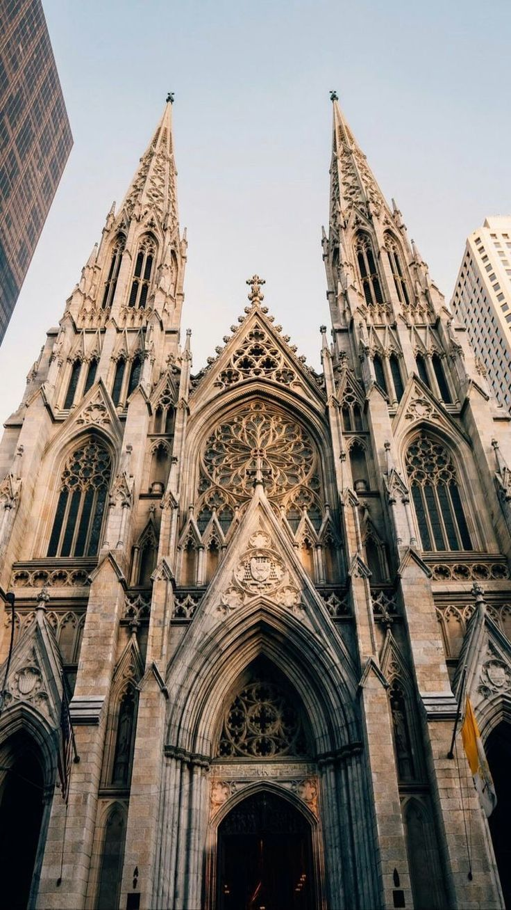

A Cúpula da Catedral da Sé é frequentemente associada ao estilo renascentista, sua arquitetura predominante é neogótica. A grandeza dessa construção é tão notável que ela é reconhecida como o quarto maior templo neogótico do mundo. Além de sua grandiosidade, a catedral é um dos principais marcos históricos e culturais da cidade, sendo um símbolo importante tanto para o turismo quanto para a prática religiosa. Sua mistura de estilos arquitetônicos e sua relevância tornam o edifício uma obra única e de grande destaque na paisagem urbana.
O estilo arquitetônico neogótico (também conhecido como
renascimento gótico ou gótico vitoriano) é um movimento
arquitetônico que começou no final da década de 1740 na
Inglaterra. Este movimento buscava reviver caraterísticas
do estilo gótico, que foi predominante na Europa durante
a baixa Idade Média.
As principais características da arquitetura neogótica são:
verticalismo dos edifícios, torres pontiagudas e esguias,
arte monumental e suntuosa, maior número de janelas e portas,
grandes vitrais, planta arquitetônica com formato de cruz latina,
paredes mais leves e finas, torres ordenadas por rosáceas,
consolidação dos arcos feita por abóbadas de arcos cruzados ou
de ogivas e abóbada de nervuras.